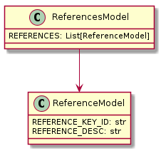

External view of the software¶
General¶
This section describes the interactions of PDS crawler with external interfaces on the PDSSP infrastructure. The different interfaces are the following:
the platform where the PDS crawler is hosted
the PDS as data source
the airflow software that allow the operator to pilot the PDS crawler

Interfaces¶
PDSSP Plateform¶
The plateform must be a computer with Linux system where the following components must be installed :
a browser to operate Airflow
docker
The platform must have xxx GB of disk space for data and xxx for images and containers
Data files¶
PDS3 Objects¶
- Module Name:
pds_models
- Description:
PDS3 models
Classes

![class DataSetInformationModel {
CONFIDENCE_LEVEL_NOTE: str
DATA_SET_COLLECTION_MEMBER_FLG: str
DATA_SET_DESC: str
DATA_SET_NAME: str
DATA_SET_RELEASE_DATE: str
DETAILED_CATALOG_FLAG: str
PRODUCER_FULL_NAME: Union[str, List[str]]
START_TIME: str
STOP_TIME: str
DATA_OBJECT_TYPE: Optional[str]
ABSTRACT_DESC: Optional[str]
CITATION_DESC: Optional[str]
DATA_SET_TERSE_DESC: Optional[str]
}
class DataSetTargetModel {
TARGET_NAME: str
}
class DataSetHostModel {
INSTRUMENT_HOST_ID: str
INSTRUMENT_ID: List[str]
}
class DataSetMissionModel {
MISSION_NAME: str
}
class DataSetReferenceInformationModel {
REFERENCE_KEY_ID: str
}
class DataSetModel {
DATA_SET_ID: str
DATA_SET_INFORMATION: DataSetInformationModel
DATA_SET_TARGET: List[DataSetTargetModel]
DATA_SET_HOST: DataSetHostModel
DATA_SET_REFERENCE_INFORMATION: List[DataSetReferenceInformationModel]
DATA_SET_MISSION: Optional[DataSetMissionModel]
}
DataSetModel --> DataSetInformationModel
DataSetModel --> DataSetTargetModel
DataSetModel --> DataSetHostModel
DataSetModel --> DataSetReferenceInformationModel
DataSetModel --> DataSetMissionModel](_images/plantuml-d518f4571f134950f930938088055be811ada553.png)
![class InstrumentReferenceInfoModel {
REFERENCE_KEY_ID: str
}
class InstrumentInformationModel {
INSTRUMENT_DESC: str
INSTRUMENT_NAME: str
INSTRUMENT_TYPE: str
}
class InstrumentModel {
INSTRUMENT_HOST_ID: str
INSTRUMENT_ID: str
INSTRUMENT_INFORMATION: InstrumentInformationModel
INSTRUMENT_REFERENCE_INFO: List[InstrumentReferenceInfoModel]
}
class InstrumentHostInformationModel {
INSTRUMENT_HOST_DESC: str
INSTRUMENT_HOST_NAME: str
INSTRUMENT_HOST_TYPE: str
}
class InstrumentHostReferenceInfoModel {
REFERENCE_KEY_ID: str
}
class InstrumentHostModel {
INSTRUMENT_HOST_ID: str
INSTRUMENT_HOST_INFORMATION: InstrumentHostInformationModel
INSTRUMENT_HOST_REFERENCE_INFO: List[InstrumentHostReferenceInfoModel]
}
InstrumentHostModel --> InstrumentHostInformationModel
InstrumentHostModel --> InstrumentHostReferenceInfoModel
InstrumentModel --> InstrumentInformationModel
InstrumentModel --> InstrumentReferenceInfoModel](_images/plantuml-30c991be6c32f213d5d34447d06ac2a7da61aa03.png)
![class MissionInformationModel {
MISSION_ALIAS_NAME: str
MISSION_DESC: str
MISSION_OBJECTIVES_SUMMARY: str
MISSION_START_DATE: str
MISSION_STOP_DATE: str
}
class MissionTargetModel {
TARGET_NAME: str
}
class MissionHostModel {
INSTRUMENT_HOST_ID: str
MISSION_TARGET: List[MissionTargetModel]
}
class MissionReferenceInformationModel {
REFERENCE_KEY_ID: str
}
class MissionModel {
MISSION_NAME: str
MISSION_HOST: MissionHostModel
MISSION_INFORMATION: MissionInformationModel
MISSION_REFERENCE_INFORMATION: List[MissionReferenceInformationModel]
}
MissionModel --> MissionHostModel
MissionModel --> MissionInformationModel
MissionModel --> MissionReferenceInformationModel
MissionHostModel --> MissionTargetModel](_images/plantuml-e2f86a5006c1ba08f6b5e43b6b8a8234b5533bd7.png)
![class DataSetMapProjectionRefInfoModel {
REFERENCE_KEY_ID: str
}
class DataSetMapProjectionInfoModel {
MAP_PROJECTION_DESC: str
MAP_PROJECTION_TYPE: str
ROTATIONAL_ELEMENT_DESC: str
DS_MAP_PROJECTION_REF_INFO: List[DataSetMapProjectionRefInfoModel]
}
class DataSetMapProjectionModel {
DATA_SET_ID: str
DATA_SET_MAP_PROJECTION_INFO: DataSetMapProjectionInfoModel
}
DataSetMapProjectionModel --> DataSetMapProjectionInfoModel
DataSetMapProjectionInfoModel --> DataSetMapProjectionRefInfoModel](_images/plantuml-7acc8ff4de44903777e8e56a43e393f832a6db92.png)
![class PersonnelInformationModel {
ADDRESS_TEXT: str
ALTERNATE_TELEPHONE_NUMBER: str
FAX_NUMBER: str
FULL_NAME: str
INSTITUTION_NAME: str
LAST_NAME: str
NODE_ID: str
PDS_AFFILIATION: str
REGISTRATION_DATE: str
TELEPHONE_NUMBER: str
PDS_ADDRESS_BOOK_FLAG: Optional[str]
}
class PersonnelElectronicMailModel {
ELECTRONIC_MAIL_ID: str
ELECTRONIC_MAIL_TYPE: str
PREFERENCE_ID: Optional[str]
}
class PersonnelModel {
PDS_USER_ID: str
PERSONNEL_ELECTRONIC_MAIL: PersonnelElectronicMailModel
PERSONNEL_INFORMATION: PersonnelInformationModel
}
class PersonnelsModel {
PERSONNELS: List[PersonnelModel]
}
PersonnelsModel --> PersonnelElectronicMailModel
PersonnelsModel --> PersonnelInformationModel
PersonnelsModel --> PersonnelModel](_images/plantuml-c9dc43f4aaed59255738424f7ed6de3e808aad55.png)
![class CatalogModel {
DATA_SET_CATALOG: Optional[Union[str, List[str]]]
INSTRUMENT_CATALOG: Optional[str]
INSTRUMENT_HOST_CATALOG: Optional[str]
MISSION_CATALOG: Optional[str]
LOGICAL_VOLUME_PATHNAME: Optional[str]
LOGICAL_VOLUMES: Optional[str]
DATA_SET_ID: Optional[str]
DATA_SET_COLLECTION_CATALOG: Optional[str]
PERSONNEL_CATALOG: Optional[str]
REFERENCE_CATALOG: Optional[str]
TARGET_CATALOG: Optional[str]
}
class DataProducerModel {
INSTITUTION_NAME: str
FACILITY_NAME: str
FULL_NAME: str
ADDRESS_TEXT: str
DISCIPLINE_NAME: Optional[str]
NODE_NAME: Optional[str] = field(default=None, repr=False, compare=False)
TELEPHONE_NUMBER: Optional[str]
ELECTRONIC_MAIL_TYPE: Optional[str]
ELECTRONIC_MAIL_ID: Optional[str]
}
class FileModel {
RECORD_TYPE: str
DESCRIPTION: Optional[str]
ENCODING_TYPE: Optional[str]
FILE_NAME: Optional[str]
FILE_RECORDS: Optional[str]
INTERCHANGE_FORMAT: Optional[str]
LABEL_RECORDS: Optional[str]
RECORD_BYTES: Optional[str]
REQUIRED_STORAGE_BYTES: Optional[str]
SEQUENCE_NUMBER: Optional[str]
UNCOMPRESSED_FILE_NAME: Optional[str]
}
class DirectoryModel {
NAME: str
FILE: List[FileModel]
RECORD_TYPE: Optional[str]
SEQUENCE_NUMBER: Optional[str]
}
class DataSupplierModel {
INSTITUTION_NAME: str
FACILITY_NAME: str
FULL_NAME: str
ADDRESS_TEXT: str
TELEPHONE_NUMBER: str
ELECTRONIC_MAIL_TYPE: str
ELECTRONIC_MAIL_ID: str
DISCIPLINE_NAME: Optional[str]
NODE_NAME: Optional[str]
}
class VolumeModel {
DATA_SET_ID: str
DESCRIPTION: str
MEDIUM_TYPE: str
PUBLICATION_DATE: str
VOLUME_FORMAT: str
VOLUME_ID: str
VOLUME_NAME: str
VOLUME_SERIES_NAME: str
VOLUME_SET_NAME: str
VOLUME_SET_ID: str
VOLUME_VERSION_ID: str
VOLUMES: str
CATALOG: CatalogModel
DATA_PRODUCER: DataProducerModel
DIRECTORY: Optional[DirectoryModel]
FILE: Optional[FileModel]
DATA_SUPPLIER: Optional[DataSupplierModel]
BLOCK_BYTES: Optional[str]
DATA_SET_COLLECTION_ID: Optional[str]
FILES: Optional[str]
HARDWARE_MODEL_ID: Optional[str]
LOGICAL_VOLUMES: Optional[str]
LOGICAL_VOLUME_PATH_NAME: Optional[str]
MEDIUM_FORMAT: Optional[str]
NOTE: Optional[str]
OPERATING_SYSTEM_ID
PRODUCT_TYPE: Optional[str]
TRANSFER_COMMAND_TEXT: Optional[str]
VOLUME_INSERT_TEXT: Optional[str]
}
VolumeModel --> CatalogModel
VolumeModel --> DataProducerModel
VolumeModel --> DirectoryModel
VolumeModel --> FileModel
VolumeModel --> DataSupplierModel](_images/plantuml-55a7fd38a7846d6b660df5ce82b5b0d804ba699d.png)
ODE web services¶
- Module Name:
ode_ws_models
- Description:
ODE web service models
Classes
![class PdsRegistryModel {
+ODEMetaDB: str
+IHID: str
+IHName: str
+IID: str
+IName: str
+PT: str
+PTName: str
+DataSetId: str
+NumberProducts: int
+ValidTargets: Dict[str, List[str]]
+MinOrbit: Optional[int]
+MaxOrbit: Optional[int]
+MinObservationTime: Optional[str]
+MaxObservationTime: Optional[str]
+NumberObservations: Optional[int]
+SpecialValue1: Optional[str]
+MinSpecialValue1: Optional[float]
+MaxSpecialValue1: Optional[float]
+SpecialValue2: Optional[str]
+MinSpecialValue2: Optional[float]
+MaxSpecialValue2: Optional[float]
}
class PdsRecordModel {
+ode_id: str
+pdsid: str
+ihid: str
+iid: str
+pt: str
+LabelFileName: str
+Product_creation_time: str
+Target_name: str
+Data_Set_Id: str
+Easternmost_longitude: float
+Maximum_latitude: float
+Minimum_latitude: float
+Westernmost_longitude: float
+Product_version_id: Optional[str]
+RelativePathtoVol: Optional[str]
+label: Optional[str]
+PDS4LabelURL: Optional[str]
+PDSVolume_Id: Optional[str]
+Label_product_type: Optional[str]
+Observation_id: Optional[str]
+Observation_number: Optional[int]
+Observation_type: Optional[str]
+Producer_id: Optional[str]
+Product_name: Optional[str]
+Product_release_date: Optional[str]
+Activity_id: Optional[str]
+Predicted_dust_opacity: Optional[float]
+Predicted_dust_opacity_text: Optional[str]
+Observation_time: Optional[str]
+SpaceCraft_clock_start_count: Optional[str]
+SpaceCraft_clock_stop_count: Optional[str]
+Start_orbit_number: Optional[int]
+Stop_orbit_number: Optional[int]
+UTC_start_time: Optional[str]
+UTC_stop_time: Optional[str]
+Emission_angle: Optional[float]
}
class ProductFile {
+FileName: str
+Type: Optional[str]
+KBytes: Optional[float]
+URL: Optional[str]
+Description: Optional[str]
+Creation_date: Optional[str]
}
PdsRecordModel --> ProductFile](_images/plantuml-ccfc059538d80eb2e8e77f17e87704c8326ba78a.png)